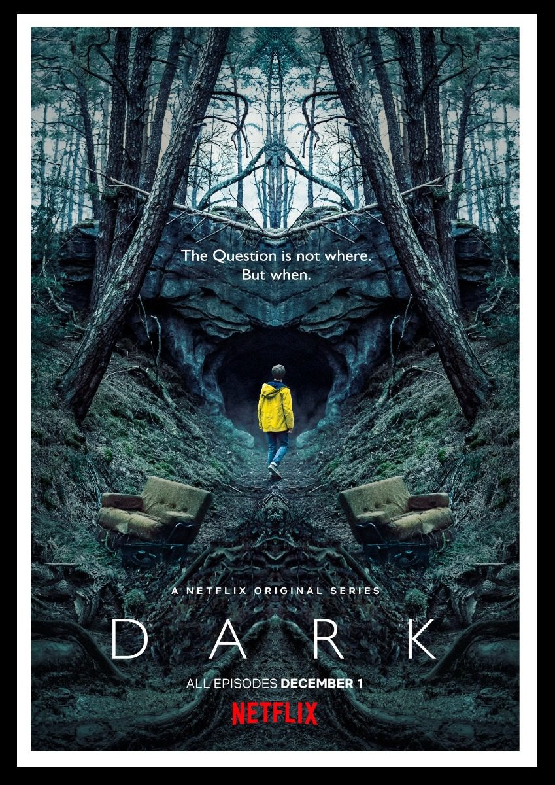
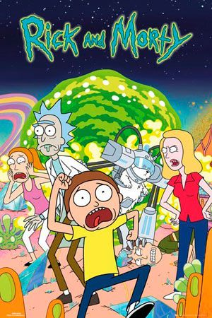
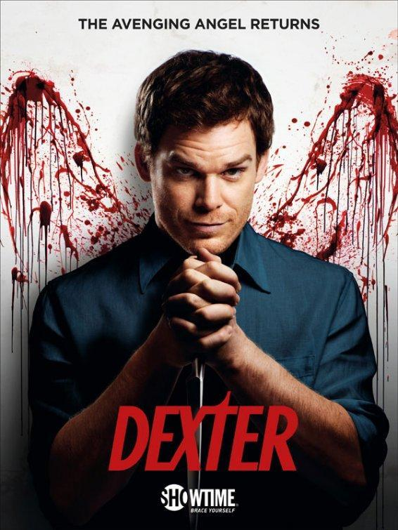
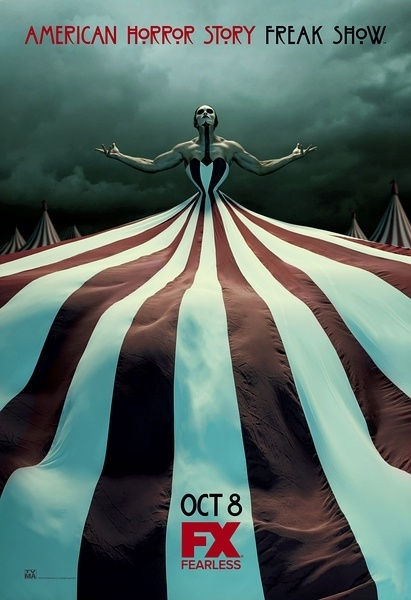
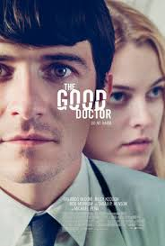
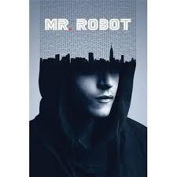

К концу подходит время благоденствия, и лето, длившееся почти десятилетие, угасает. Вокруг средоточия власти Семи королевств, Железного трона, зреет заговор, и в это непростое время король решает искать поддержки у друга юности Эддарда Старка. В мире, где все — от короля до наемника — рвутся к власти, плетут интриги и готовы вонзить нож в спину, есть место и благородству, состраданию и любви.
К концу подходит время благоденствия, и лето, длившееся почти десятилетие, угасает. Вокруг средоточия власти Семи королевств, Железного трона, зреет заговор, и в это непростое время король решает искать поддержки у друга юности Эддарда Старка. В мире, где все — от короля до наемника — рвутся к власти, плетут интриги и готовы вонзить нож в спину, есть место и благородству, состраданию и любви.

Здесь рассказывается интересная теория о времени, что всё циклично и что конец - это начало, а начало - это конец. Все детали, связанные со временем, продуманы до мелочей. И невольно начинаешь верить, что всё так и есть на самом деле - время нам не принадлежит и этот цикл повторяется бесконечное количество раз. Это самый главный плюс этого сериала.
Также здесь раскрывается проблема отношения детей и родителей, отношения между супругами и между детьми.

В центре сюжета - школьник по имени Морти и его дедушка Рик. Морти - самый обычный мальчик, который ничем не отличается от своих сверстников. А вот его дедуля занимается необычными научными исследованиями и зачастую полностью неадекватен. Он может в любое время дня и ночи схватить внука и отправиться вместе с ним в безумные приключения с помощью построенной из разного хлама летающей тарелки.

Я — Декстер. Декстер Морган. Я работаю судмедэкспертом в полиции Майами. Я не понимаю любви, мне безразличен секс, и у меня нет чувств. А еще я серийный убийца.
Мой отец был полицейским и прекрасно обучил меня прятать улики. Обычным гражданам не стоит меня бояться, я убиваю только преступников, подонков, до которых почему-либо не смогла или не захотела добраться полиция.
Но однажды… В Майами появляется некто, равный мне. Даже превзошедший меня. Сумевший меня заинтересовать..

Сериал полностью не оправдывает своего названия. Смотришь его как сборник занимательных легенд и баек, леденящих душу. Здесь сюжет раскрывается в детективном жанре: персонажи что-то узнают, зрителю подкидывают кусочки пазла, а в конце картинка собирается.
Неотъемлемая часть ужастиков здесь должным образом не прорисована. Исключением можно назвать 6 сезон «Роанок». Сюжет каждого сезона круто закручен и зрителю предстоит самому распутать нити событий.

История молодого талантливого врача с синдромом саванта, обладающего уникальными способностями - невероятной памятью и фантастической чувствительностью к проблемам, вспыхивающим внутри человеческого организма. Герой становится блестящим хирургом, несмотря на это, в личностном плане его развитие соответствует уровню десятилетнего ребёнка.

История молодого программиста Эллиота, страдающего социофобией и решившего, что единственный приемлемый для него способ взаимодействия с людьми — это профессия хакера. Таким образом, он быстро оказывается в том самом месте, где пересекаются интересы его работодателя — фирмы, занимающейся кибербезопасностью, — и подпольных организаций, которые пытаются его завербовать с целью обрушения самых могучих американских корпораций.